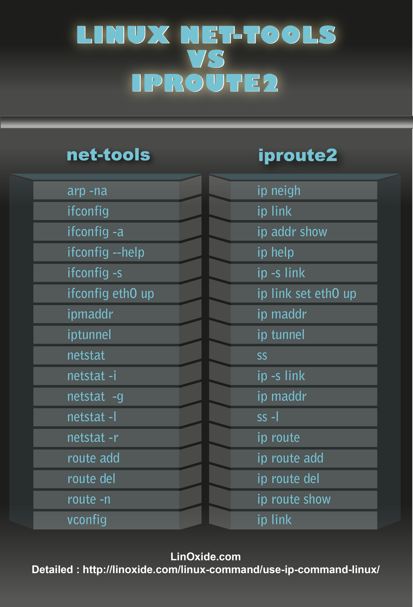

centos 实践
Table of Contents
1 时间设置
sudo cp /usr/share/zoneinfo/Asia/Shanghai /etc/localtime
sudo ntpdate us.pool.ntp.org
2 网络
** 由于 systemd 和 udev 引入了一种新的网络设备命名方式—一致网络设备命名（CONSISTENT NETWORK DEVICE NAMING），CentOS 7 可以根据固件、拓扑、位置信息来设置固定名字。这种命名方式：
- 优点
- 缺点
2.1 net-tools VS iproute2

2.1.1 ip
2.1.2 ss
2.1.3 nmtui
2.1.4 nmcli
2.2 问题
VMware workstation 安装 centos7 之后，每次重启之后网路都是默认关闭的，不方便，因此需要设置一下：
# 查看自己的网卡信息
ip addr
sudo vim /etc/sysconfig/network-scripts/ifcfg-eno16777736
设置
ONBOOT=yes
sudo systemctl restart network
3 软件源
3.1 yum
3.2 dnf
为了安装 DNF，您必须先安装并启用 epel-release 依赖。
sudo yum install epel-release
使用 epel-release 依赖中的 YUM 命令来安装 DNF 包。
sudo yum install dnf
4 shadowsocks1
sudo dnf install dnf-plugins-core
sudo dnf copr enable librehat/shadowsocks
sudo dnf update
sudo dnf install shadowsocks-qt5
5 pygments
6 global
7 emacs
sudo yum -y install gtk+-devel gtk2-devel libXpm-devel libpng-devel giflib-devel libtiff-devel libjpeg-devel ncurses-devel gpm-devel dbus-devel dbus-glib-devel dbus-python GConf2-devel pkgconfig cd emacs24.5 ./configure make && sudo make install
8 ag
rpm -Uvh http://download.fedoraproject.org/pub/epel/7/x86_64/e/epel-release-7-5.noarch.rpm yum install the_silver_searcher
9 google chrome
添加软件源：
su root vim /etc/yum.repos.d/google-chrome.repo
在其中写入如下内容：
[google-chrome] name=google-chrome baseurl=http://dl.google.com/linux/chrome/rpm/stable/$basearch enabled=1 gpgcheck=1 gpgkey=https://dl-ssl.google.com/linux/linux_signing_key.pub
安装：
sudo yum install google-chrome-stable